BonsaiDb Commerce Benchmark
large, balanced, 1 agent(s)
Configuration
Initial Data Set
| Type | Count |
|---|---|
| Products | 5000 |
| Categories | 100 |
| Customers | 5000 |
| Orders | 5000 |
Shopping Plans
This run executed 1000 shopping plans across 1 worker(s). All total, the workers will execute the following breakdown of operations:
| Operation | Invocations |
|---|---|
| Load | 1 |
| LookupProduct | 2729 |
| FindProduct | 2762 |
| CreateCart | 714 |
| AddProductToCart | 1350 |
| Checkout | 165 |
| RateProduct | 81 |
Summary
| Backend | Total Time | Wall Time | Transport |
|---|---|---|---|
| bonsaidb-local | 1.704s | 1.704s | None |
| bonsaidb-local+lz4 | 1.721s | 1.721s | TCP |
| bonsaidb-quic | 3.687s | 3.687s | UDP with TLS |
| bonsaidb-ws | 3.201s | 3.201s | TCP |
| postgresql | 28.92s | 28.92s | TCP |
Table of Contents:
Operation Results
Load
Measures the time spent loading the initial data set and performing any pre-cache operations that most database administrators would perform on their databases periodically to ensure good performance.
This operation was executed 1 time(s) across each backend.
| Backend | Avg | Min | Max | StdDev | Outliers |
|---|---|---|---|---|---|
| bonsaidb-local | 948.6ms | 948.6ms | 948.6ms | 0s | 0 |
| bonsaidb-local+lz4 | 907.7ms | 907.7ms | 907.7ms | 0s | 0 |
| bonsaidb-quic | 961.1ms | 961.1ms | 961.1ms | 0s | 0 |
| bonsaidb-ws | 976.5ms | 976.5ms | 976.5ms | 0s | 0 |
| postgresql | 24.38s | 24.38s | 24.38s | 0s | 0 |
LookupProduct
Meaures the time spent looking up a product by its id. This operation is meant to simulate the basic needs of the database to provide a product details page after a user clicked a direct link that contians the product's unique id, including the product's current rating.
This operation was executed 2729 time(s) across each backend.
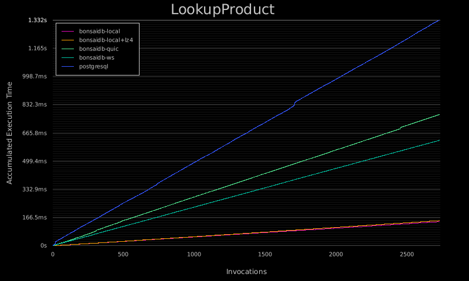| Backend | Avg | Min | Max | StdDev | Outliers |
|---|---|---|---|---|---|
| bonsaidb-local | 52.19us | 27.80us | 367.4us | 10.52us | 12 |
| bonsaidb-local+lz4 | 54.51us | 28.60us | 324.5us | 9.874us | 19 |
| bonsaidb-quic | 283.9us | 204.5us | 4.567ms | 139.7us | 11 |
| bonsaidb-ws | 227.9us | 195.4us | 935.5us | 25.64us | 12 |
| postgresql | 488.0us | 279.5us | 12.49ms | 342.0us | 6 |
FindProduct
Measures the time spent looking up a product by its name (exact match, indexed). This operation is meant to simulate the basic needs of the database to provide a product details after finding a product by its name, including the product's current rating.
This operation was executed 2762 time(s) across each backend.
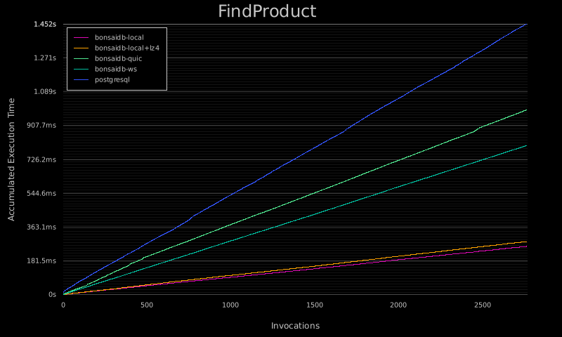| Backend | Avg | Min | Max | StdDev | Outliers |
|---|---|---|---|---|---|
| bonsaidb-local | 94.09us | 51.80us | 1.523ms | 42.12us | 4 |
| bonsaidb-local+lz4 | 103.5us | 53.10us | 1.508ms | 43.81us | 7 |
| bonsaidb-quic | 359.1us | 244.5us | 4.569ms | 192.1us | 23 |
| bonsaidb-ws | 289.9us | 170.7us | 1.148ms | 46.96us | 8 |
| postgresql | 525.8us | 336.5us | 14.94ms | 308.7us | 8 |
 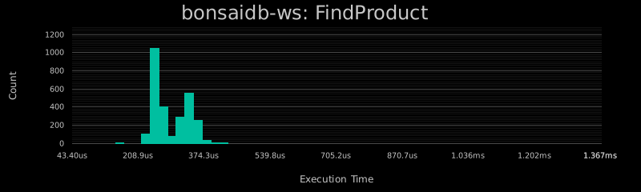
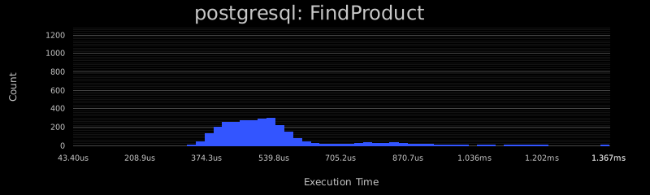
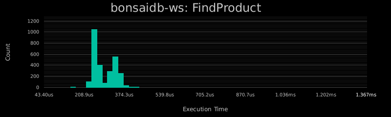
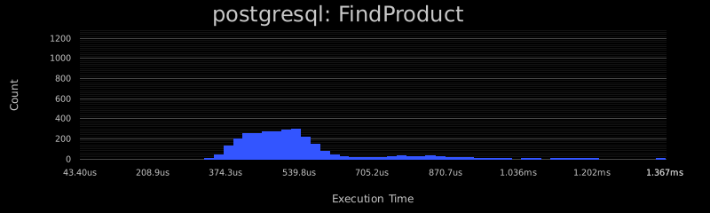
CreateCart
Measures the time spent creating a shopping cart.
This operation was executed 714 time(s) across each backend.
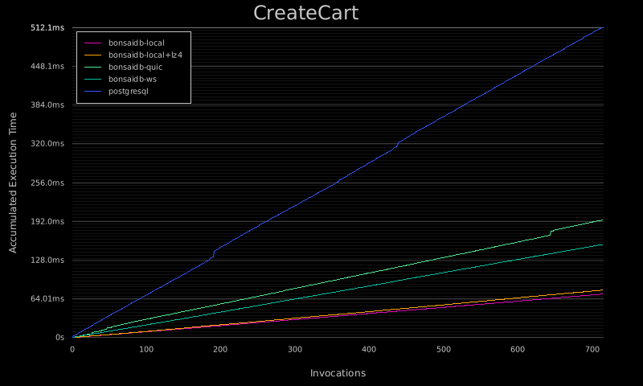| Backend | Avg | Min | Max | StdDev | Outliers |
|---|---|---|---|---|---|
| bonsaidb-local | 100.8us | 80.40us | 240.1us | 12.10us | 2 |
| bonsaidb-local+lz4 | 110.0us | 85.20us | 237.5us | 12.46us | 5 |
| bonsaidb-quic | 271.9us | 198.5us | 6.450ms | 252.3us | 5 |
| bonsaidb-ws | 215.3us | 183.6us | 464.7us | 15.48us | 5 |
| postgresql | 717.2us | 547.4us | 9.192ms | 365.5us | 5 |
 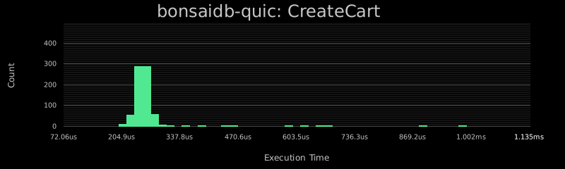
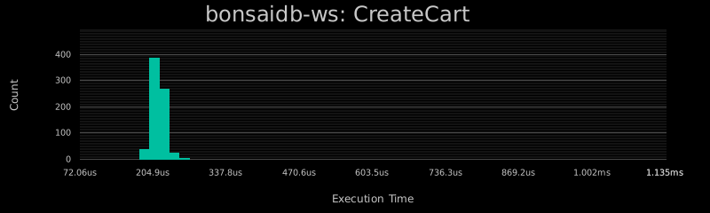
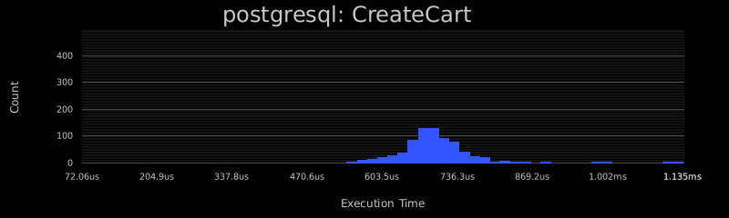
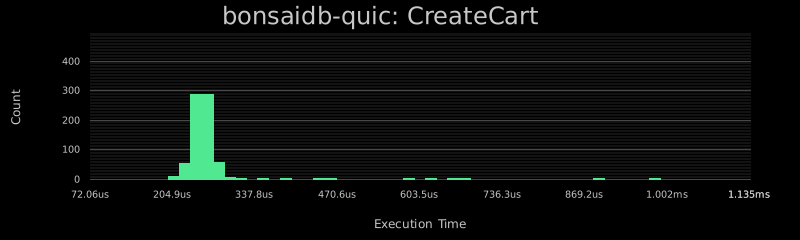
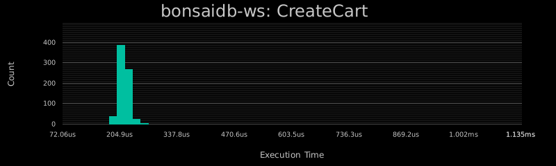
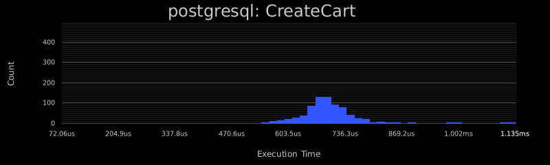
AddProductToCart
Measures the time spent adding a product to a shopping cart.
This operation was executed 1350 time(s) across each backend.
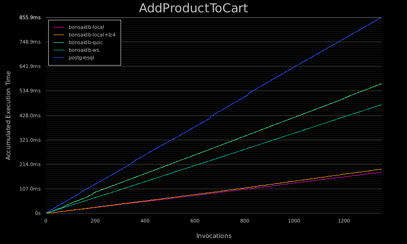| Backend | Avg | Min | Max | StdDev | Outliers |
|---|---|---|---|---|---|
| bonsaidb-local | 133.2us | 110.6us | 262.1us | 14.07us | 19 |
| bonsaidb-local+lz4 | 143.2us | 114.5us | 1.084ms | 31.41us | 4 |
| bonsaidb-quic | 419.0us | 315.6us | 4.529ms | 149.2us | 11 |
| bonsaidb-ws | 351.6us | 303.0us | 781.0us | 21.46us | 8 |
| postgresql | 634.0us | 500.7us | 6.709ms | 214.7us | 6 |
Checkout
Measures the time spent converting a shopping cart into an order for a customer.
This operation was executed 165 time(s) across each backend.
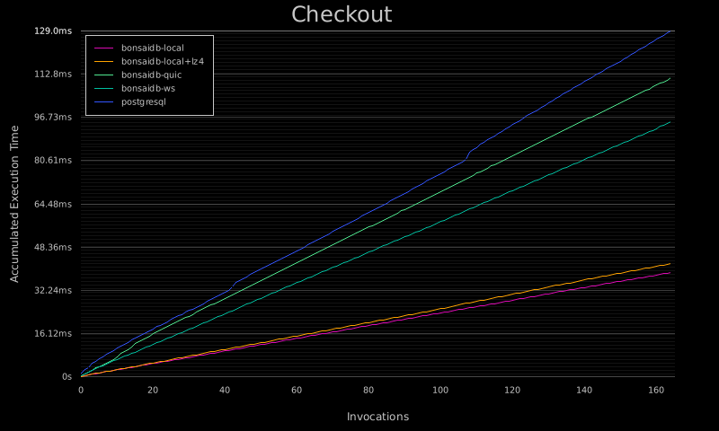| Backend | Avg | Min | Max | StdDev | Outliers |
|---|---|---|---|---|---|
| bonsaidb-local | 235.7us | 206.3us | 310.8us | 18.13us | 2 |
| bonsaidb-local+lz4 | 256.0us | 225.4us | 412.1us | 23.34us | 1 |
| bonsaidb-quic | 674.3us | 589.8us | 1.481ms | 101.9us | 2 |
| bonsaidb-ws | 575.7us | 529.5us | 905.9us | 35.49us | 2 |
| postgresql | 781.6us | 616.2us | 2.929ms | 225.3us | 4 |
 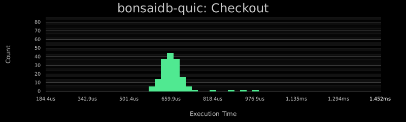
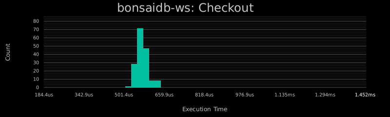
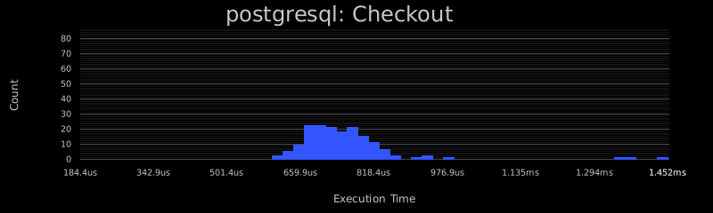
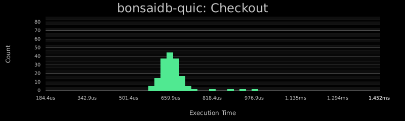
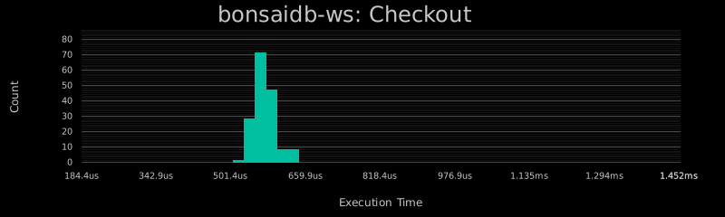
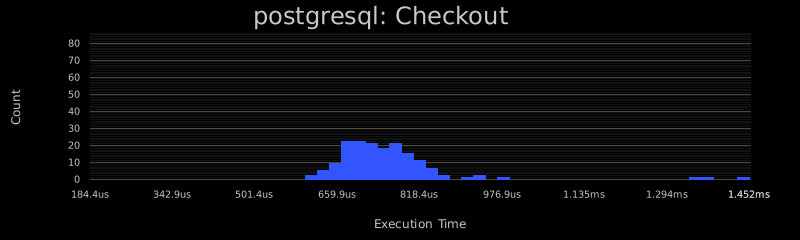
RateProduct
Measures the time spent adding or updating a review of a product by a customer. Each customer can only have one review per product. When this operation is complete, all subsequent calls to LookupProduct and FindProduct should reflect the new rating. This simulates an 'upsert' (insert or update) operation using a unique index.
This operation was executed 81 time(s) across each backend.
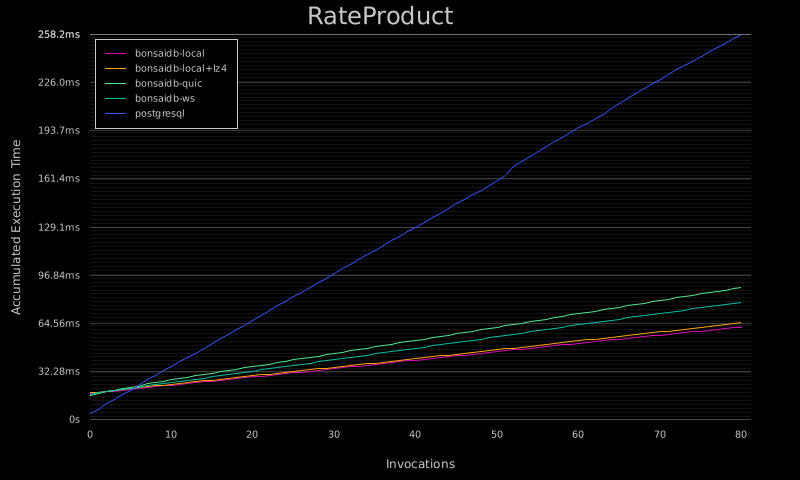| Backend | Avg | Min | Max | StdDev | Outliers |
|---|---|---|---|---|---|
| bonsaidb-local | 766.6us | 484.7us | 17.63ms | 1.886ms | 1 |
| bonsaidb-local+lz4 | 802.3us | 509.1us | 18.12ms | 1.937ms | 1 |
| bonsaidb-quic | 1.095ms | 817.3us | 16.58ms | 1.734ms | 1 |
| bonsaidb-ws | 973.8us | 709.3us | 17.18ms | 1.813ms | 1 |
| postgresql | 3.188ms | 2.896ms | 6.512ms | 430.7us | 1 |